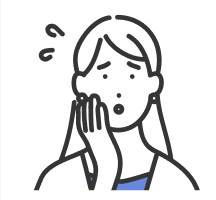
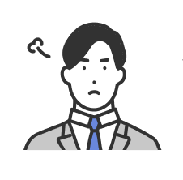
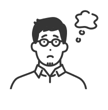

Your Concerns
こんなお悩み、
ありませんか？

いまの仕事に将来が見えない
手に職をつけて
長く働きたい
長く働きたい

未経験だとどこも受からない気がする

「見て覚えろ」の会社は避けたい
それ、「未経験だから」ではなく「入る会社」の問題かもしれません。
「未経験OK」と書いてあっても、
中身は会社ごとに違う。
※構造を説明するための概念図です。実測値ではなく、金額を保証するものでもありません。
01
教え方の中身
02
資格取得の支援
03
配属先と働き方
求人票の「未経験OK」「資格取得支援あり」は、書いてあること自体に基準がありません。この3つを入社前に確認できるかどうかで、1年後の景色が変わります。
Case
未経験からの転職事例

前職：製造（自動車部品）
26歳・男性／高卒・組立ラインを5年
BEFORE
320万
AFTER
400万
決め手1年目の教育担当が決まっている会社に絞った。2級の受験費用と講座代が会社負担

前職：飲食・接客
24歳・男性／専門卒・店舗スタッフ3年
BEFORE
280万
AFTER
360万
決め手土日休み・直行直帰ありの現場から探した。接客で身についた段取りと調整をそのまま職務経歴に書き直した

前職：派遣・アルバイト
27歳・男性／職歴にブランクあり
BEFORE
300万
AFTER
380万
決め手ブランクの理由を面接でどう話すかを一緒に整理。学歴・職歴より人物を見る会社を選んだ
※支援実績の一例です。個人が特定されないよう内容の一部を変更しています。結果は前職の経験と応募先により異なり、同様の結果を保証するものではありません。
FAQ
よくある質問
建設業界の経験がない方からのご相談が中心です。ただ「未経験歓迎」と書いてある会社でも、教える体制が整っているかどうかは会社ごとに差があります。そこを事前に確認した上でご紹介します。
施工管理は、自分で重いものを運ぶ仕事ではありません。工程・品質・安全・原価を管理し、職人さんや関係者と段取りを組む仕事です。体力よりも、段取りと連絡をきちんと回せるかを見られます。
学歴・経歴は不問でご相談を受けています。短期離職やブランクは、理由をどう説明するかで受け取られ方が変わります。面談でそこを一緒に整理します。※応募先企業ごとの条件は別途あります。
先に取る必要はありません。2級施工管理技士は実務経験を積んでから受験するのが一般的です。受験費用や講座代を会社が負担する制度があるかどうかは、会社選びの段階で確認します。
現場の種類と会社によって大きく変わります。「働きたい時間」「通える範囲」「土日は休みたい」といった条件を先に伺い、そこに合う現場から探します。
費用は一切かかりません。決めていない段階のご相談も歓迎です。「向いているか知りたい」「話を聞くだけ」でも構いません。